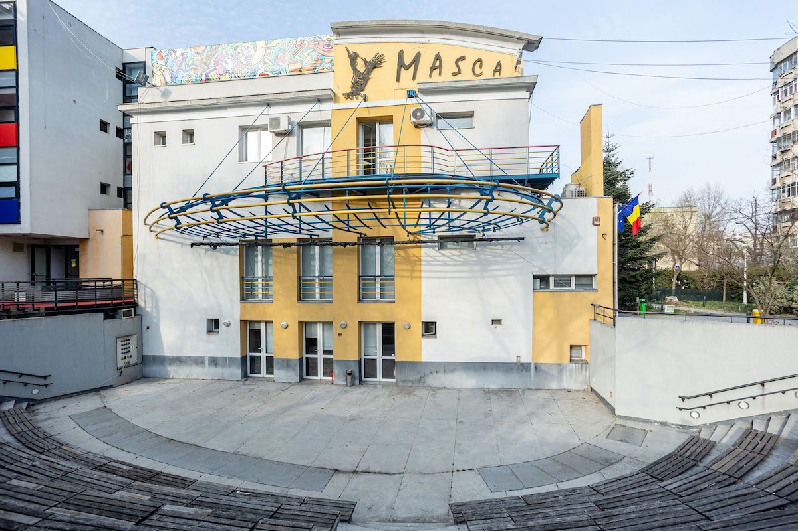
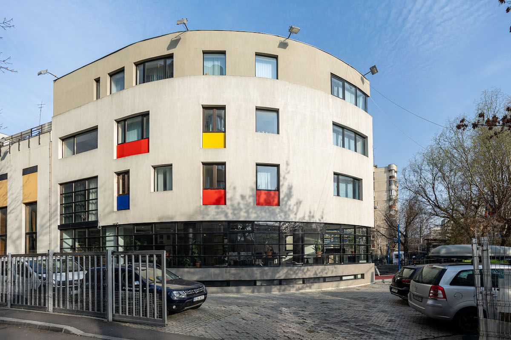
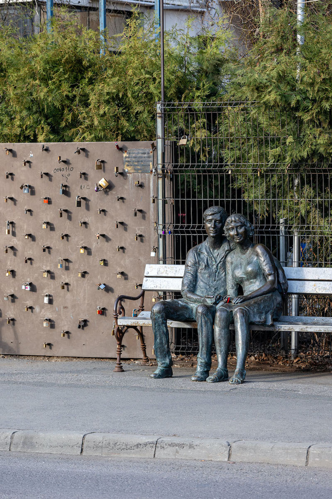
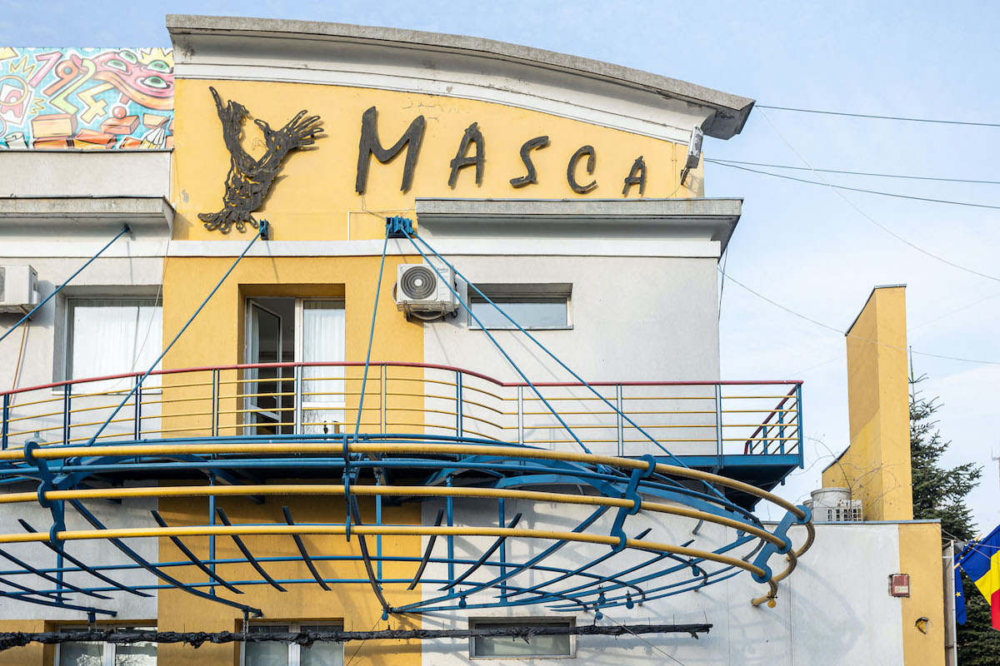
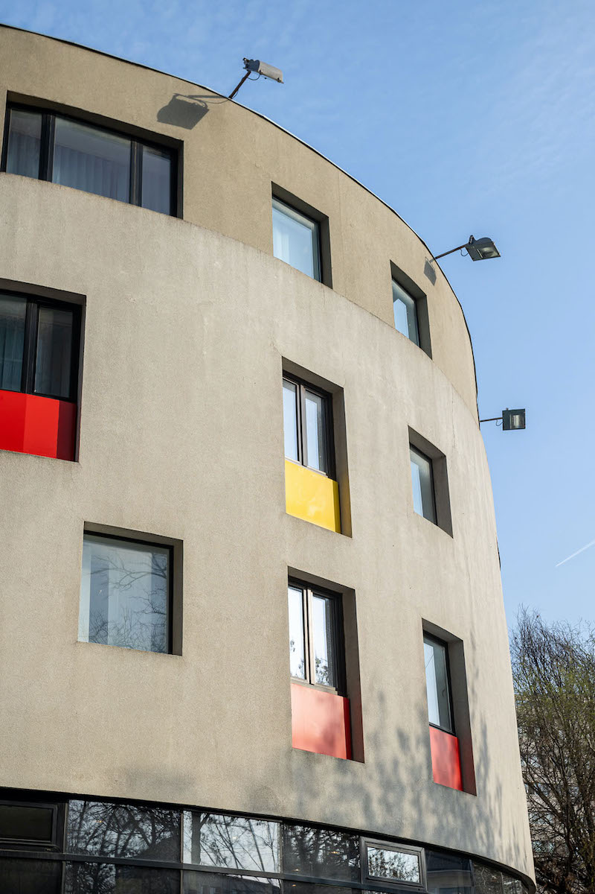

Clădirea teatrului, poziționată între stradă și blocurile înalte ale cartierului-dormitor Militari, funcționează ca o adevărată agora contemporană. Spațiul are două săli de spectacol, un adăpost de protecție civilă (folosit, în limitele permise de lege, pentru repetiții), o seră, o bibliotecă, precum și o grădină impresionantă situată pe acoperiș. Noua aripă a teatrului, inaugurată în 2010, găzduiește birourile administrative, o bucătărie, trei dormitoare destinate invitaților – regizori, actori sau colaboratori –, dintre care unul are acces pe terasa clădirii. În jurul teatrului se întinde o grădină folosită ca spațiu de așteptare pentru public sau ca loc pentru reprezentații site-specific. Tot acolo găsesc și duba Regina — o bucată de istorie pe patru roți care a purtat spectacolele Masca prin tot orașul, un amfiteatru în aer liber cu o capacitate de 300 de locuri, și cușca câinelui adoptat de echipă, care a fost botezat cu două nume: Grigore și Jardel.
Odată cu extinderea clădirii, s-a dezvoltat treptat și o arhivă digitală a evenimentelor din istoria teatrului. În 2009, toate fotografiile au fost încărcate pe platforma Flickr, iar în 2020, întreaga colecție de casete VHS a fost convertită în format digital. Astăzi, arhiva Teatrului Masca este păstrată într-un spațiu de stocare virtual și pe hard disk-uri fizice. Arhiva, o formă de conservare a memoriei instituției, reflectă grija față de patrimoniul lăsat de co-fondatori - regizoarea Anca Florea & actorul și regizorul Mihai Mălaimare - încă de la înființarea teatrului, în urmă cu 35 de ani.
Ca să aflu mai multe despre întreg ecosistemul din jurul Teatrului Masca, am străbătut Bucureștiul, din Berceni până în Militari, într-o zi caniculară de iunie, și am stat de vorbă cu Cristinel Dâdăl, consultant artistic al teatrului din 2009. În conversația noastră, care a fost editată pentru claritate, am vorbit despre cum Masca, sub actuala conducere a managerului interimar Catinca Drăgănescu, își propune, printre altele, să devină primul teatru sustenabil și ecologic din România și să crească o comunitate cu focus pe axa cultură – educație – mediu. Dar poate că cea mai importantă direcție este căutarea permanentă a unui model alternativ de relație cu publicul, astfel încât teatrul să funcționeze în serviciul comunității.
Pe 24 mai 1990, printr-o Hotărâre de Guvern, a fost înființat Teatrul Masca, singurul teatru de gest, pantomimă și expresie corporală din România. Inițial, fără un sediu propriu, acest statut, după cum spune Cristinel, i-a „urmărit” pe co-fondatori. „În septembrie 1992, au ieșit în stradă, în fața guvernului din piața Victoriei. Timp de două săptămâni, zi de zi, au jucat acolo, au dormit, și-au băut cafeaua. A fost modul lor de a protesta față de indiferența autorităților. Ieșirea în stradă a fost din nevoie.”
În fața incertitudinii și în lipsa unui spațiu fizic, Teatrul Masca și-a deschis prima stagiune în aer liber. A fost o direcție care a consolidat identitatea teatrului, generând experiențe autentice care, de-a lungul anilor, au contribuit la coagularea unor comunități. „Am trăit situații în care adolescenți sau tineri au întâlnit teatrul pentru prima dată printr-un spectacol Masca, în parc. Ani mai târziu, tot în stradă, unii dintre ei au venit la mine, în timp ce montam scena și anunțam spectacolul la microfon. M-a emoționat să-i revăd, de data aceasta, cu proprii lor copii.”
Astfel, Teatrul Masca a fost pentru mult timp singura instituție publică de cultură din România care, an de an, a susținut o stagiune în aer liber, cu producții special concepute pentru spațiul străzii; o instituție care funcționează și astăzi după un principiu simplu: nu așteptăm ca publicul să vină la noi, ci mergem noi către el.
„Atunci au descoperit că între acasă și servici, din punctul A în punctul B, omul se poate opri să guste cultură și, dacă face asta, atunci validează acest act. De aici s-a născut direcția străzii care era validată de mult timp în Europa și în lume.” Această direcție a devenit o practică recurentă, prin care actorii au înțeles că se pot apropia de oameni și dincolo de scenă, în viața reală, în cartierele orașului. „Actorii se sunau dimineața, « Băi, ești sănătos? / Da, suntem întregi ». Apoi se întâlneau undeva, luau o cafea și încărcau recuzita în Regina, un Mercedes MB 100, prima mașină a teatrului. Se urcau în dubă și porneau spre oraș, în căutarea maidanelor care astăzi sunt înlocuite de parcări. Se plimbau prin Rahova, Ferentari, până găseau un spațiu liber între blocuri. Primul lucru pe care-l făceau era să curețe locul de gunoaie, pământ și ierburi. Apoi descărcau decorul și dădeau o tură prin cartier anunțând « Lume, lume, azi facem teatru la voi! » Iar seara se ținea spectacolul.”
Teatrul Masca a pornit de la o viziune simplă: actorul deține toate mijloacele necesare de expresie pentru a construi un spectacol. Fondat imediat după Revoluție, într-un moment în care cuvântul „libertate” răsuna pe toate străzile, Masca a fost, pentru co-fondatorii Mihai Mălaimare și Anca Florea, un spațiu în care libertatea însemna „posibilitatea de a încerca să viseze nebun,” spune Cristinel. „Mihai Malaimare fusese șef de promoție la IATC (Institutul de Artă Teatrală și Cinematografică) când a înființat Masca. El putea să rămână pe acel drum, însă a simțit nevoia de-a face acest teatru în care actorul este depozitarul tuturor mijloacelor de expresie necesare. Adică actorul are în el tot ce îi trebuie ca să facă un spectacol: cântec, pantomimă, mijloacele dramatice, clasice. De aici s-a născut ideea acestui teatru.”
Teatrul Masca a transformat diferite colțuri din oraș într-o scenă vie. A adus spectacole în locuri neconvenționale: din parcuri până la stații de metrou; spații în care oamenii fie sunt în proximitatea locuinței lor, fie în tranzit. În parcul Humulești, din cartierul Ferentari, când au ajuns cu decoruri, lumini și mașina pe care scria „acest camion transportă cultură”, oamenii au crezut că urmează alegeri. De ce? Pentru că ultima oară când se aprinsese iluminatul public în parc avuseseră loc ultimele alegeri. „Când și-au dat seama că nu sunt alegeri, ci că urmează să jucăm un spectacol de teatru, s-au întors în case și au venit schimbați cu hainele bune. Mi s-a părut fabulos că au validat prezența unui act cultural acolo, în modul lor cel mai natural. Chestiile astea nu se pot recupera. Sunt lucrurile care fac în continuare parte din identitatea și din spiritul acestui teatru.”
Jucând în exterior, Masca a redefinit relația dintre actor și public: într-un spațiu fără convențiile și rigorile unei săli de teatru, spectatorul are libertatea să plece, să intervină, să reacționeze spontan. E un spațiu care cere de la actor un tip de vulnerabilizare și de deschidere din partea lui. „Pentru el este tot o scenă chiar dacă e la nivelul asfaltului. Această dinamică poate crea experiențe sublime, dar poate crea și frustrări. Una e să te uiți din scaun, alta e să fii la distanța la care suntem noi. Să vezi actorul că transpiră, că trebuie să ascundă anumite gesturi sau să șteargă pe față chestii care în sală se maschează ușor. În stradă nu există culise. Totul este la vedere.”
Dorința de a aduce arta în locuri în care te aștepți mai puțin a fost și rămâne esențială pentru identitatea teatrului, chiar dacă autoritățile locale și birocrația din ultimii ani a blocat drumul spre susținerea stagiunilor în aer liber. „Astăzi este imposibil să mai susținem o stagiune outdoor. Ține de logistică, transport și resurse umane. Un ITP sau un RCA la un camion costă zeci de milioane. E nevoie de aprobări de la administrația domeniului public, de la primăria de sector, de la poliția locală. În 2021-2022, procedura devenise atât de greoaie, încât eu am spus că e bine că, după 30 de ani, ne-am câștigat dreptul de-a cere aprobare să jucăm gratuit.”
Din 1996 până în 2004, Masca a activat în Casa de Cultură a Sindicatelor din Bucureștii Noi. În 1997, când au primit clădirea din bulevardul Uverturii, spațiile erau inutilizabile. În 2005 s-au mutat acolo, iar primele reprezentații au fost cu publicul stând pe lăzi de bere. Nu existau gradene. Cristinel își amintește o situație în care erau mai mulți actori decât spectatori. „Au ieșit în fața publicului și au văzut trei oameni, ei fiind șapte pe scenă. «Ne cerem scuze, dar nu credem că are rost ». Iar cei din public au spus: « Nu vreți să jucați? Noi vrem să vă vedem ». Și au jucat.”
Teatrul Masca a fost prezent și în spațiile publice din cartierul Militari. Au jucat la Politehnică, Păcii, în parcul Crângași, pe bulevardul Iuliu Maniu, la fostul cinema Giulești și până la centrul comercial SIR, inclusiv în fața stației de metrou Lujerului. În perioada pandemiei, au lansat proiectul „Departe de centru, aproape de oameni”, prin care au invitat teatre de stat din București și trupe independente să susțină spectacole în amfiteatrul Masca, pe timpul verii. Inițiativa și-a propus să aducă teatrul mai aproape de publicul din cartier, pentru care distanța, transportul sau costurile fac accesul la spectacolele din centrul orașului mai dificil.
Cât despre rolul și importanța unui teatru de cartier, Cristinel subliniază că teatrul este o necesitate pentru toată lumea, fie că realizăm sau nu acest lucru: „Trebuie să existe o farmacie în cartier? Da. Un supermarket? Da. La fel și teatrul.”
Deși se definește ca „teatru de cartier”, Masca și-a depășit granițele sediului fizic și ale vecinătății din sectorul 6, fiind prezent, ani la rând, și în alte cartiere-dormitor ale Bucureștiului, acolo unde infrastructura culturală este inexistentă sau se află doar pe hârtie.
„Spectacolele în stradă au ocupat, în ultimul mandat al Ancăi Florea, 75% din activitatea noastră. Iar relația cu sediul a mers tot în același spirit. Au fost evenimente care implicau spectacole sub cerul liber, dar și ideea de comunitate, pentru că noi mergeam spre comunități în spectacole. Teatrul Masca a creat comunități dincolo de sedii.”
Această deschidere a contribuit la creșterea unui public care nu e compus majoritar din oamenii care locuiesc în blocurile vecine Teatrului Masca. Sunt comunități la care Masca a ajuns prin teatrul în stradă. „E un alt mod a te conecta cu publicul, de a-i atrage aici, care poate nici nu a fost gândit inițial. Anca Florea avea o vorbă: « Hai Cristi, văzând și făcând ». Oamenii care veneau în parcul IOR la spectacolele noastre erau o comunitate. Începuseră să ne cunoască, ne ofereau feedback-ul lor, aveau bucuria de a redescoperi actorii pe care îi știau din alte spectacole. Poate într-un an erau statui vivante din Meseriile uitate ale Parisului, în altul erau personaje de pe Calea Victoriei la sfârșit de secol XIX.”
Dacă în cazul Centrului de Resurse în Fotografie (CdRF), despre care am scris aici, „al treilea spațiu” era reprezentat de curtea interioară, în cazul Teatrului Masca, Cristinel își dorește ca acest spațiu să fie teatrul în sine. Merită reamintite aici cuvintele sociologului Ray Oldenburg, care definește „primul spațiu” ca fiind locuința, „al doilea” – locul de muncă, iar „al treilea spațiu” – acel loc informal unde oamenii se întâlnesc, discută liber și creează legături autentice.
În momentul de față, Masca visează la o transformare concretă care să întregească ideea unui „al treilea spațiu”: eliminarea gardului care înconjoară instituția. Un gest care ar deschide fizic și simbolic locul către comunitatea învecinată. Dacă n-ar exista această delimitare, oamenii ar putea intra în curte cu lejeritatea cu care pășesc într-un părculeț, fără să simtă că e un teritoriu interzis sau oficial. Ideea nu e doar să elimine un gard, ci să construiască o relație între o instituție publică și oamenii din jurul ei, să le amintească că spațiul ăsta le aparține și lor. Însă renunțarea la gard ar presupune instalarea mai multor puncte de pază, iar aceste măsuri implică costuri pe care, în prezent, Masca cu greu și le-ar putea permite.
„Noi visăm ca spațiul Teatrului Masca, începând cu curtea, să fie un spațiu comunitar. Omul din blocul de lângă noi nu concepe acest spațiu ca fiind al lui. Dar, într-un fel, noi considerăm că este al lui pentru că suntem o instituție finanțată de Primăria Municipiului București (n.d.: în 1999, printr-o hotărâre de Guvern, Teatrul Masca a trecut din subordinea Ministerului Culturii în cea a Primăriei). Așa cum primăria oferă locuitorilor dreptul la gaze, la curent electric, la transport public, consider că și noi suntem un serviciu public, în ideea în care lumea are nevoie de cultură, conștient sau nu. Și aici e o altă problemă - cum creezi contextul în care ei să realizeze că, de fapt, pot consuma cultură.”
În prezent, Teatrul Masca se definește ca un centru la intersecția dintre cercetare, educație, cultură și mediu. Începând cu stagiunea 2025-2026, teatrul intenționează să ofere publicului informații despre proporția materialelor refolosite și reciclate în realizarea spectacolelor, respectând normele impuse de Uniunea Europeană. Pentru oamenii din spatele Teatrului Masca însă, sustenabilitatea sau „gramatica ecologiei”, cum o numește Cristinel, nu se reduce doar la aspectele ecologice. Ea se traduce și printr-o grijă față de comunitățile subreprezentate – copii, adolescenți și seniori – deci prin ateliere și proiecte pe termen lung dedicate lor. Astfel, teatrul nu mai poartă doar emblema unei instituții culturale care se uită exclusiv către interior, ci joacă rolul unui organism viu, care se află în serviciul comunității.
„Facem ateliere pentru cei mici (Masca Junior) și avem o o trupă de adolescenți adoptată de la Colegiul Tehnic «Iuliu Maniu». În 2023, am început să lucrăm cu ei în cadrul proiectului «Vocea Teatrului Licean Bucureștean» și continuăm să colaborăm și în prezent, independent de acest proiect. Se întâlnesc săptămânal și lucrează la un spectacol pornind de la experiențele, confruntările și nevoile lor curente. Avem și o trupă de seniori din sectorul 6, cu care am intrat în legătură prin proiectul european Human Mosaic, unde am prototipat un spectacol comunitar doar cu membri din comunitate, nu actori profesioniști. Am vrut să dăm o voce comunităților subreprezentate — copii, adolescenți și seniori — și să pornim de la ateliere separate, căutând acel fir roșu necesar pentru un spectacol. Relația cu seniorii continuă și acum: lucrează alături de Ana Maria Pîslaru și Sorin Dinculescu, actorii noștri de la începuturile teatrului Masca.”
Anul acesta, pe 24 mai, Teatrul Masca a împlinit 35 de ani. Cu această ocazie au publicat un catalog bilingv redactat de Catinca Drăgănescu, pe baza unei cercetări realizate de Radu Crăciun, cercetător în cadrul departamentului de cercetare, dezvoltare și inovare al UNATC. Pentru acest catalog și-au dorit o privire externă, critică, care să reconstituie parcursul instituției. Catinca a construit o narațiune care recuperează tot ce s-a întâmplat de-a lungul timpului la Masca, unde este acum și unde își dorește să ajungă.
„Unul dintre mesajele ascunse este că noi continuăm nebunia fondatorilor. Este o cercetare în curs, iar eu sunt curios cum va fi documentată la următoarea aniversare — de 70 de ani.”, încheie Cristinel Dâdăl.




